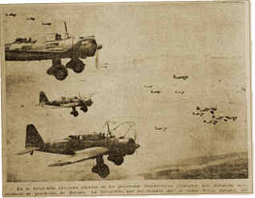

|
j
a v a s c r i p t |
April 5, 1942

Holy Week of Hell in Bataan
Played softball yesterday, hurting my foot sliding home, and tearing a chunk off my left elbow. Spent the day at Arbadji’s so I missed VoF at noon and KGEI in the afternoon. On the way home I biked through the Boulevard and saw so many people riding around in bicycles and carretelas that it looked like Fifth Avenue on St. Patrick’s Day. It was very hot too; real summer has at last begun. I got VoF at 1930. Their morning communiqué reported sharp skirmishes. The enemy’s heavy attack was stopped with only slight gains and heavy casualties. One dive-bomber was shot down. A night attack was also stopped. |
|
|
|
|